Enregistre tes entretiens en trente secondes. Vois où tu en es, ce sur quoi tu progresses, et la prochaine action à mener. Tes données restent sur ton ordinateur.Log each session in thirty seconds. See where you stand, what you are getting better at, and your next move. Your data stays on your computer.
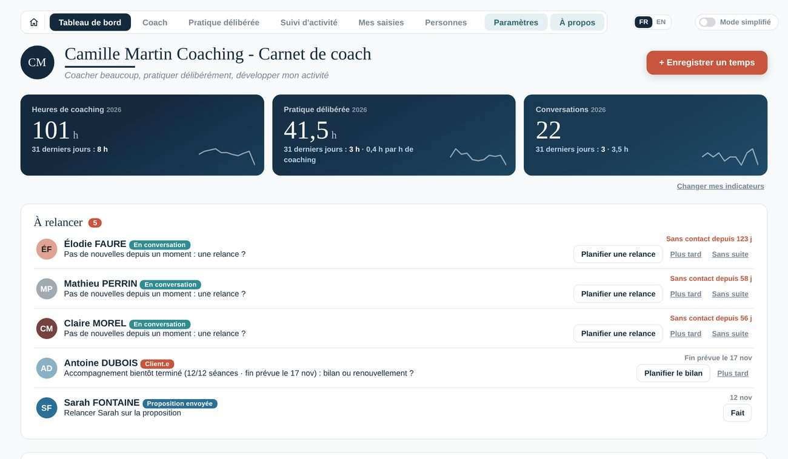
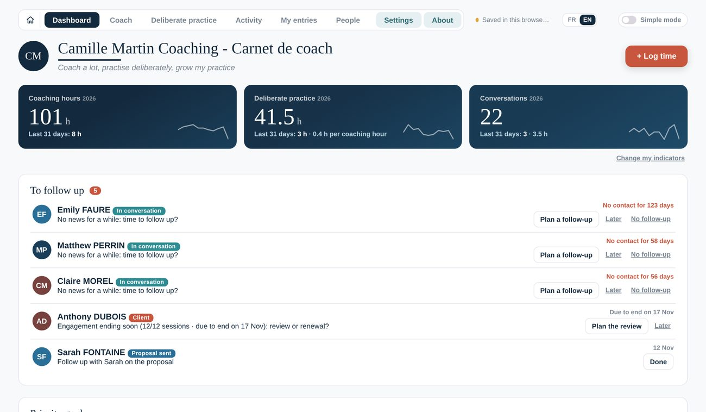
Le carnet rend les deux visibles, et t'aide à développer l'activité qui les rend possibles.The notebook makes both visible, and helps you build the practice that makes them possible.
Chaque entretien s'enregistre en quelques clics : le type, la durée, la personne. Le reste est facultatif.Every session takes a few clicks: the type, the length, the person. Everything else is optional.
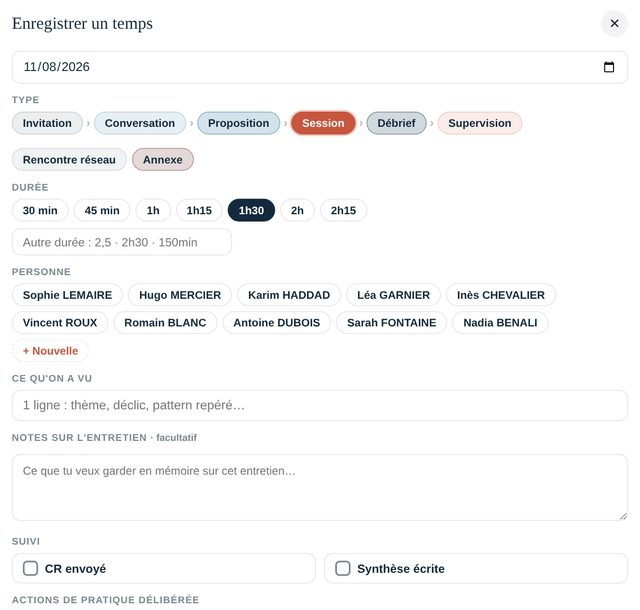
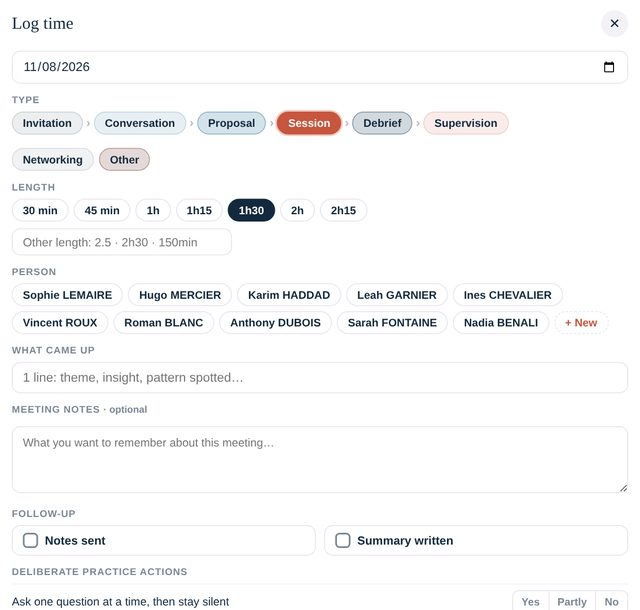
Note ton aisance sur les compétences que tu travailles, choisis un focus, transforme-le en actions concrètes, vérifiées à chaque séance.Rate how at ease you feel on the skills you are working on, pick a focus, and turn it into concrete actions, checked at every session.
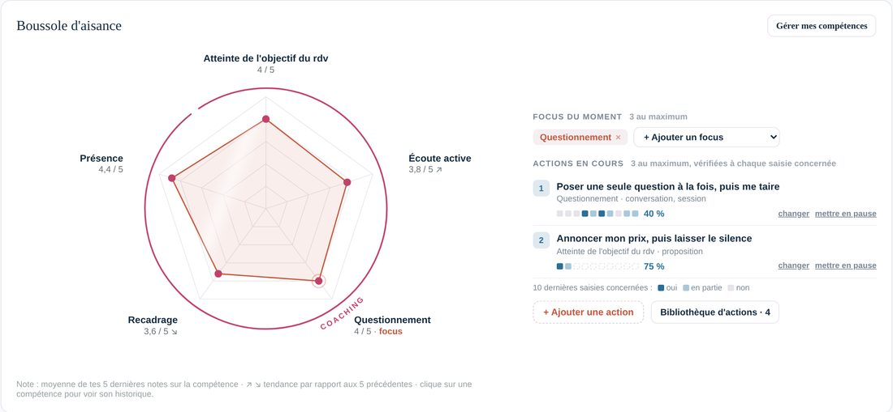
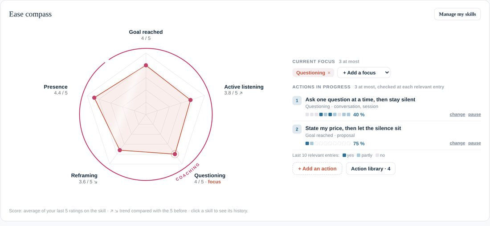
Chaque personne avance toute seule dans ton pipeline, au fil de tes saisies : rencontre, conversation, proposition, client.Each person moves through your pipeline on their own, as you log: first meeting, conversation, proposal, client.
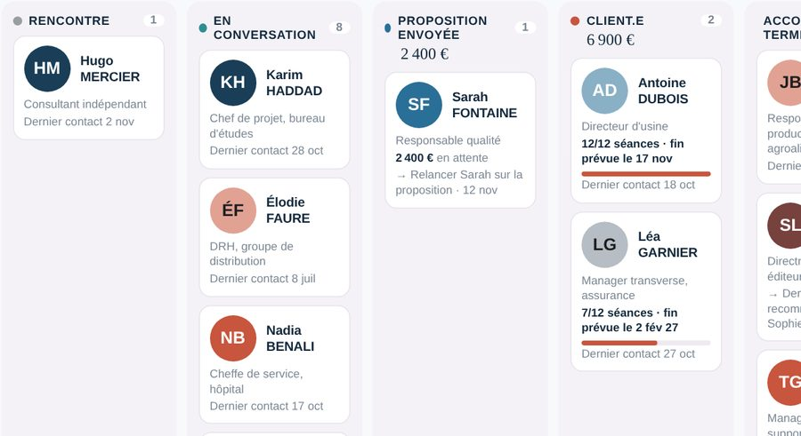
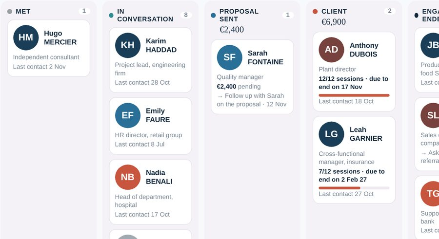
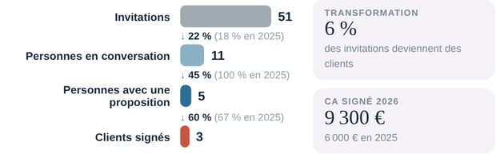
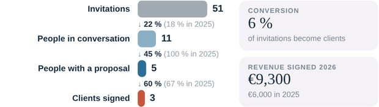
Chaque statistique a son niveau, calé sur le parcours d'un coach régulier. Tes hauts faits marquent les caps : première séance, cent heures, premier contrat, premier client recommandé.Each statistic has its own level, calibrated on the path of a steadily practising coach. Achievements mark the milestones: first session, a hundred hours, first contract, first referred client.
Deux thèmes au choix : professionnel, ou jeu vidéo.Two themes to choose from: professional, or video game.
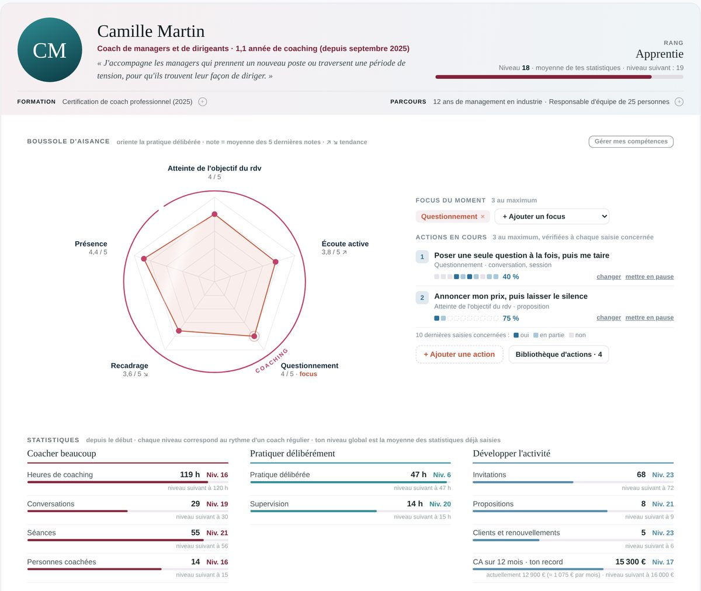
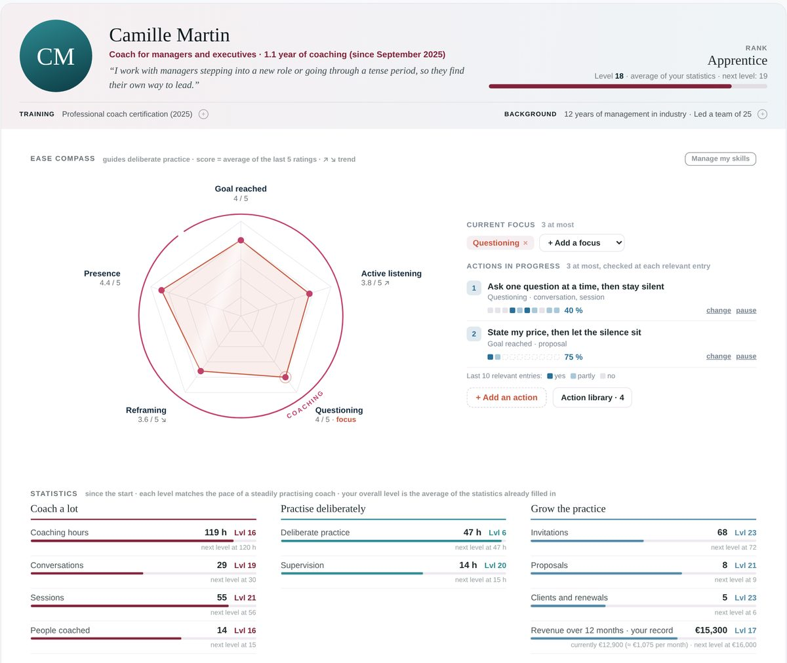
On conseille souvent aux coachs les réseaux sociaux et le marketing. C'est une voie légitime, avec son prix. Ce carnet suit celle de coachs qui en vivent depuis des années : le coaching se vend par le coaching.Coaches are often told to rely on social media and marketing. It is a legitimate path, and it has its price. This notebook follows another one, championed by coaches who have been making a living from it for years: coaching sells through coaching.On conseille souvent aux coachs les réseaux sociaux et le marketing. C'est une voie légitime, avec son prix. Ce carnet suit celle de Gianni Bergandi et Magali Wagner (Odyssée), et de Rich Litvin : le coaching se vend par le coaching.Coaches are often told to rely on social media and marketing. It is a legitimate path, and it has its price. This notebook follows another one, taught by Gianni Bergandi and Magali Wagner (Odyssée) and by Rich Litvin: coaching sells through coaching.
Une personne par jour, c'est 365 dans l'année. Pour la relation, pas pour la transaction.One person a day is 365 a year. For the relationship, not the transaction.
Tu plantes des graines : certaines germent trois semaines plus tard, d'autres trois ans après.You are planting seeds: some sprout three weeks later, others three years later.
Une conversation de coaching est une vraie séance, pas un appel découverte.A coaching conversation is a real session, not a discovery call.
La conversation sert les deux côtés : tu sens s'il serait juste d'accompagner la personne.The conversation serves both sides: you sense whether working together would be right.
Une proposition se fait dans un rendez-vous dédié. Et la recommandation se demande.A proposal deserves its own meeting. And referrals are asked for, not waited for.
Des cycles de plusieurs mois sur des enjeux forts, à un prix qui reflète cette valeur.Several-month cycles on high stakes, at a price that reflects that value.
Pas de serveur, pas de compte, pas de cloud imposé. Le carnet tourne dans ton navigateur et écrit dans un seul fichier, dans le dossier de ton choix.No server, no account, no forced cloud. The notebook runs in your browser and writes to a single file, in the folder of your choice.
Toutes tes saisies dans un fichier, sur ton ordinateur. Dans un dossier synchronisé, il te suit partout.All your entries in one file, on your computer. Put it in a synced folder and it follows you everywhere.
Un mot de passe, une clé de secours. Sans eux, personne ne peut le lire, pas même l'auteur de l'outil.A password and a recovery key. Without them nobody can read it, not even the author of the tool.
Une copie par heure, puis par jour. Une erreur ? Tu reviens en arrière en deux clics.A copy every hour, then every day. Made a mistake? Go back in two clicks.
Installé comme une application, il fonctionne sans connexion et se met à jour tout seul.Installed like an app, it works without a connection and updates itself.
Voir comment l'outil est construit →See how the tool is built →
Je crois que les années qui viennent nous obligeront à interroger ce que nous faisons, pourquoi, et le sens que nous y mettons. Je crois aussi que le coaching, exercé avec exigence, peut aider les personnes, les équipes et les sociétés à traverser des défis sans précédent.I believe the years ahead will force us to question what we do, why, and the meaning we give it. I also believe that coaching, practised with rigour, can help individuals, teams and societies through unprecedented challenges.
Ce carnet est né de ma pratique. C'est un projet personnel, que je partage gratuitement pour aider celles et ceux qui veulent progresser dans cette voie à piloter et développer la leur, en se concentrant sur l'essentiel.This notebook was born from my practice. It is a personal project, which I share for free to help those who want to grow on this path run and develop their own, by focusing on what matters.
Le carnet s'utilise sur ordinateur, avec Chrome ou Edge. Envoie-toi le lien pour l'ouvrir plus tard.The notebook runs on a computer, in Chrome or Edge. Send yourself the link to open it later.
Oui. C'est un projet personnel, partagé gratuitement avec tous les coachs, y compris pour leur activité professionnelle. Le revendre ou en faire un service concurrent est interdit sans accord (licence PolyForm Shield).Yes. It is a personal project, shared for free with every coach, including for professional use. Reselling it or turning it into a competing service requires permission (PolyForm Shield licence).
Dans un seul fichier, dans le dossier que tu choisis sur ton ordinateur. Rien n'est envoyé sur internet.In a single file, in the folder you choose on your computer. Nothing is sent over the internet.
Non. Ouvre le carnet dans Chrome ou Edge ; tu peux ensuite l'installer comme une application, en un clic.No. Open the notebook in Chrome or Edge; you can then install it as an app in one click.
Pas encore : il faut Chrome ou Edge sur ordinateur pour écrire dans un dossier.Not yet: writing to a folder requires Chrome or Edge on a computer.
Non. Tu peux importer tes anciennes saisies, ou déclarer simplement tes totaux d'avant le carnet.No. You can import your past entries, or simply enter your totals from before the notebook.
Le mode simplifié garde l'essentiel : tes entretiens, tes personnes, ton activité. Tu passes au mode complet quand tu veux.Simple mode keeps the essentials: your sessions, your people, your activity. Switch to full mode whenever you like.
Oui : le bouton FR / EN, en haut à droite de l'application, change la langue à tout moment. Le carnet de démonstration existe dans les deux langues.Yes: the FR / EN button, top right of the app, switches the language at any time. The demo notebook exists in both languages.
Une lettre à chaque nouvelle version, pas plus. Pour te désinscrire, il suffit de répondre « stop ».One email per new release, no more. To unsubscribe, just reply “stop”.
Le carnet est gratuit et le restera. S'il t'aide, tu peux contribuer au temps que j'y consacre.The notebook is free and will stay free. If it helps you, you can contribute to the time I put into it.
Chaque retour de coach nourrit les prochaines versions.Every coach's feedback shapes the next versions.
Gratuit, sans compte, tes données chez toi.Free, no account, your data stays with you.